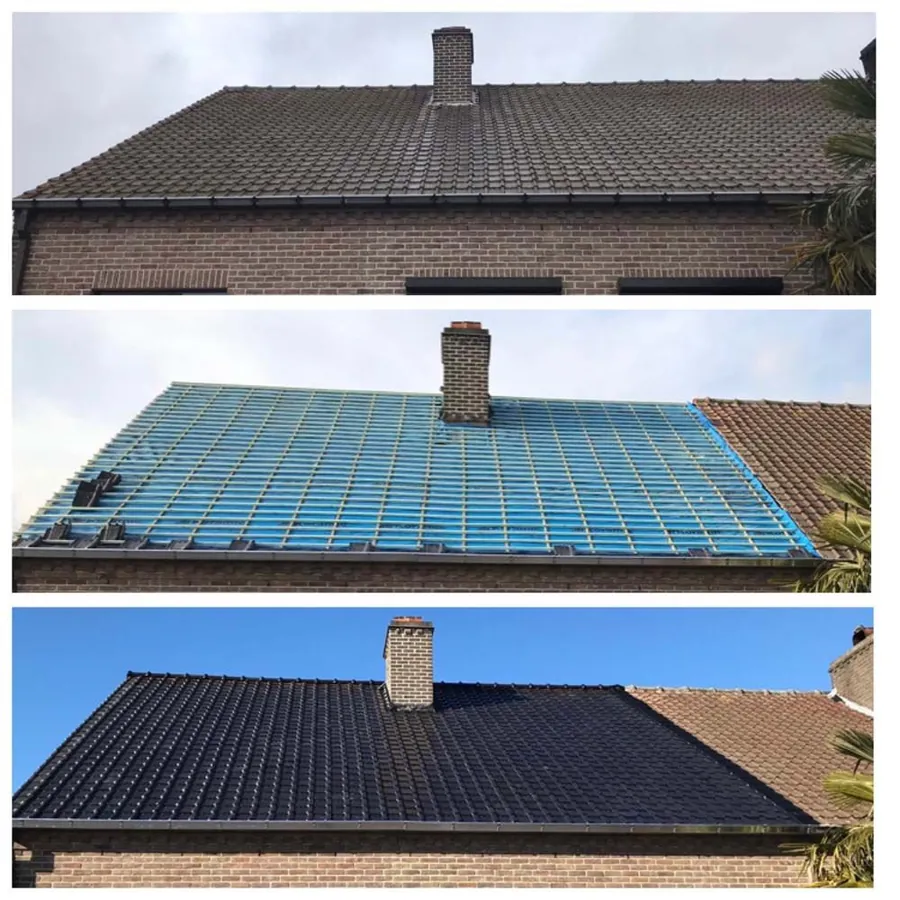

Dakwerken
Plat of hellend, kleine herstelling of totaalrenovatie. Ook alles rond uw dak.
- Nieuwe pannendaken in verschillende kleuren en formaten
- Platte daken met roofing en lichtkoepels
- Dakgoten, schouwen en Velux-ramen
- Daken ontmossen, reinigen en coaten